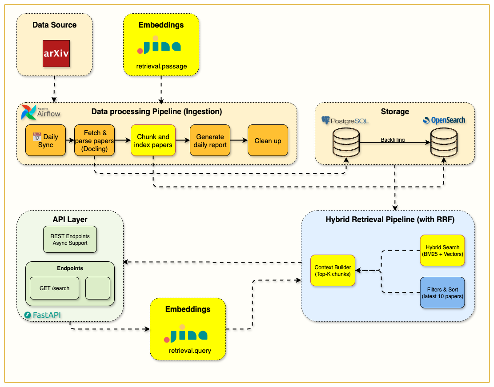

Split each paper into section-aware chunks, embed them with Jina (1024-dim), store vectors and text in one OpenSearch index, and serve BM25, vector or hybrid (RRF) search from a single endpoint.
Tag: week4.0 · Notebook: notebooks/week4/week4_hybrid_search.ipynb · Original blog: The Chunking Strategy That Makes Hybrid Search Work

1. Why this week matters
Week 3's search finds the right paper. An LLM in Week 5 needs the right passage: a few hundred words it can read and quote. And BM25 can't match meaning ("LLM" ≠ "large language model" to BM25).
Week 4 fixes both:
- Chunking gives retrieval a granularity that fits embedding models and LLM context windows.
- Embeddings add semantic matching.
- Hybrid search with RRF combines BM25 precision on exact terms with vector recall on meaning, without tuning weights.
How you chunk is one of the most important decisions in a RAG system, and it gets much less attention than model choice.
2. What you build
3. Chunking
3.1 Why not just split every N words?
Fixed windows are simple, but they cut through sections, mix "Related Work" with "Method", and leave chunks with no idea what paper they're from. The chunker here is hybrid section-based: it uses the section structure Docling extracted in Week 2 and only falls back to fixed windows when it has to.
3.2 The algorithm
text_chunker.py:54-91 and _chunk_by_sections:
chunk_paper(title, abstract, raw_text, sections)
│
├─ sections available?
│ ├─ parse (dict | list | JSON string) → {section_title: content}
│ ├─ filter out:
│ │ • empty sections
│ │ • metadata-looking titles ("authors", "affiliation", "arxiv", titles < 5 chars, …)
│ │ • sections that duplicate the abstract (substring or > 80% word overlap)
│ │ • tiny sections that look like emails/affiliations
│ │
│ ├─ header = "{title}\n\nAbstract: {abstract}\n\n"
│ │
│ └─ for each section:
│ < 100 words → buffer; merge with neighbouring small sections
│ (if still < 200 words incl. header, append to the previous chunk)
│ 100–800 words → ONE chunk: header + "Section: {title}\n\n{content}"
│ > 800 words → word-window split (600 words, 100 overlap), header prepended to each part
│ section_title = "Method (Part 1)", "Method (Part 2)", …
│
└─ no usable sections → chunk_text(raw_text): 600-word windows, step 500 (100-word overlap)
Config (src/config.py ChunkingSettings, .env): CHUNKING__CHUNK_SIZE=600, CHUNKING__OVERLAP_SIZE=100, CHUNKING__MIN_CHUNK_SIZE=100.
Every chunk starts with the paper title and abstract. A chunk from deep in "4.2 Ablations" is useless on its own ("removing component B reduces accuracy by 3%"... B of what?). With the header attached:
- its embedding carries the paper's topic, so semantic search finds it for topic-level queries,
- its BM25 score gets title and abstract terms,
- the LLM in Week 5 sees what the passage belongs to.
Trade-off: the abstract (≈150–250 words) is repeated in every chunk of the paper. That costs index size and embedding tokens, and when top_k chunks from the same paper reach the LLM, the abstract is in the prompt several times. Some systems prepend only the title, or a one-sentence LLM-written summary ("contextual retrieval").
3.4 Overlap
In window mode, consecutive chunks share 100 words, so a sentence that straddles a boundary appears whole in at least one chunk. Section-based chunks have no overlap; section boundaries are natural breakpoints anyway.
3.5 Exercise
Pick one paper from PostgreSQL and run:
from src.services.indexing.text_chunker import TextChunker
chunks = TextChunker().chunk_paper(title=p.title, abstract=p.abstract, full_text=p.raw_text,
arxiv_id=p.arxiv_id, paper_id=str(p.id), sections=p.sections)
for c in chunks: print(c.metadata.chunk_index, c.metadata.section_title, c.metadata.word_count)
Look at which sections were dropped, merged and split. Do the boundaries make sense?
4. Embeddings
jina_client.py
- Model:
jina-embeddings-v3, dimensions=1024. It's an API, so you need JINA_API_KEY; the free tier is enough for this course.
- Asymmetric tasks: chunks are embedded with
task="retrieval.passage" and queries with task="retrieval.query". Queries are short questions and passages are long statements, and the model has separate adapters for each. Using the wrong task quietly lowers quality.
- Batching:
embed_passages(texts, batch_size=50) during indexing, so one HTTP call covers up to 50 chunks.
- Failure handling: the client raises on HTTP errors. The router catches that and falls back to BM25 (section 6.3), so search still works when Jina is down.
5. The chunk index
index_config_hybrid.py defines one index, arxiv-papers-chunks, serving all three modes:
"settings": { "index.knn": true, ... },
"mappings": { "dynamic": "strict", "properties": {
"chunk_text": {"type": "text", "analyzer": "text_analyzer"},
"embedding": {"type": "knn_vector", "dimension": 1024,
"method": {"name": "hnsw", "space_type": "cosinesimil", "engine": "nmslib",
"parameters": {"ef_construction": 512, "m": 16}}},
"arxiv_id": {"type": "keyword"}, "chunk_index": {"type": "integer"}, "section_title": {"type": "keyword"},
"title": {...}, "abstract": {...}, "authors": {...}, "categories": {"type": "keyword"},
"published_date": {"type": "date"}, ...
}}
- One index for both modes. BM25 and kNN run against the same documents, so no syncing between two stores.
- Denormalization. Every chunk carries its paper's
title, authors, abstract, categories and published_date. Filters and display need no join. It's normal search-engine practice, and it's why HybridIndexingService copies paper fields into each chunk.
- HNSW (Hierarchical Navigable Small World) is an approximate nearest-neighbour graph.
m=16 is the number of links per node (more means better recall and more memory). ef_construction=512 is how carefully the graph is built (higher means better recall and slower indexing).
cosinesimil fits Jina vectors, which are meant to be compared by cosine.
Re-indexing (hybrid_indexer.py:118-155): with replace_existing=True, each paper's old chunks are deleted (delete_by_query on arxiv_id) before the new ones are bulk-indexed. Re-running the DAG doesn't duplicate chunks.
6. Hybrid search with Reciprocal Rank Fusion
6.1 The problem with mixing scores
BM25 scores are unbounded (5, 12, 30…). Cosine-based kNN scores sit in a narrow range near 1. Adding them is meaningless, and normalizing and weighting them takes tuning that breaks when the corpus changes.
6.2 RRF uses ranks, not scores
RRF(d) = Σ over result lists r 1 / (k + rank_r(d)) k = 60
Worked example (k = 60):
| Chunk |
BM25 rank |
Vector rank |
RRF score |
| A |
1 |
3 |
1/61 + 1/63 = 0.0323 |
| B |
2 |
— |
1/62 = 0.0161 |
| C |
— |
1 |
1/61 = 0.0164 |
| D |
4 |
2 |
1/64 + 1/62 = 0.0318 |
Documents found by both retrievers (A, D) rise to the top. A document found by only one still gets in. No weights, no score normalization. k dampens the advantage of rank 1 over rank 2.
6.3 How the code does it
On main this uses OpenSearch's native hybrid query plus a search pipeline. (The Week 4 README describes a manual fusion; the code later moved to native RRF, which needs OpenSearch ≥ 2.19.)
# setup, once (client.py: _create_rrf_pipeline)
PUT /_search/pipeline/hybrid-rrf-pipeline
{ "phase_results_processors": [ { "score-ranker-processor":
{ "combination": { "technique": "rrf", "rank_constant": 60 } } } ] }
# query time (client.py: _search_hybrid_native)
{ "size": size,
"query": { "hybrid": { "queries": [
<the Week 3 BM25 bool/multi_match query, size*2>,
{ "knn": { "embedding": { "vector": query_embedding, "k": size*2 } } }
]}}}
?search_pipeline=hybrid-rrf-pipeline
Each sub-query fetches 2 × size candidates (more candidates make fusion better), and RRF merges them down to size.
Mode selection in search_unified:
use_hybrid=False or no embedding → BM25 only (QueryBuilder, chunk mode)
use_hybrid=True and embedding → native hybrid + RRF
and in the router:
if request.use_hybrid:
try: query_embedding = await embeddings_service.embed_query(request.query)
except: query_embedding = None # → silently BM25
The response's search_mode field tells you what actually ran.
7. Hands-on
git checkout week4.0 && docker compose up --build -d
# .env must contain a real JINA_API_KEY
# Trigger the DAG in Airflow, then:
curl localhost:9200/arxiv-papers-chunks/_count
curl "localhost:9200/arxiv-papers-chunks/_search?size=1&_source_excludes=embedding&pretty"
# BM25 only
curl -X POST localhost:8000/api/v1/hybrid-search/ -H 'Content-Type: application/json' \
-d '{"query": "mixture of experts routing", "use_hybrid": false, "size": 5}'
# Hybrid
curl -X POST localhost:8000/api/v1/hybrid-search/ -H 'Content-Type: application/json' \
-d '{"query": "mixture of experts routing", "use_hybrid": true, "size": 5}'
Experiment: write 10 queries of three kinds and compare BM25 against hybrid top-5:
- exact-term ("LoRA rank"), paraphrase ("making big models cheaper to fine-tune"), and mixed.
BM25 should win or tie on exact terms, hybrid should win clearly on paraphrases. This is the start of an evaluation set.
8. Design decisions and trade-offs
| Decision |
Trade-off |
| Section-based chunks of variable size (100–800 words) |
Coherent passages, but uneven sizes; a 750-word chunk uses much more of the LLM's budget than a 150-word one |
| Title+abstract header on every chunk |
Better retrieval and grounding; repeated tokens in index and prompt |
| Hosted embeddings (Jina) |
High quality, no GPU needed; network latency on every query, an API key, and a dependency on an external service. A local sentence-transformers model is the alternative (the dependency is already in pyproject.toml). |
| Single index for BM25 + kNN |
Simple and consistent; vectors make the index much larger than Week 3's |
| RRF over weighted score fusion |
No tuning, robust; ignores how much better rank 1 is than rank 2. The commented-out HYBRID_SEARCH_PIPELINE in index_config_hybrid.py shows the weighted alternative. |
ef_construction=512, m=16 |
High recall, slower indexing; fine at this scale |
9. Gotchas
- 🟡 Short texts crash the chunker.
chunk_text calls self._reconstruct_text(words, text) (text_chunker.py:114), but the method takes one argument. Any paper falling back to window mode with < 100 words raises TypeError (caught per paper in index_paper, so that paper gets 0 chunks). Fix: self._reconstruct_text(words).
- No text, no chunks. If
raw_text and sections are null (see the Week 2 parse bug), paper_data.get("raw_text", ...) returns None, chunk_text returns [], and the paper is invisible to search. Check _count after every DAG run.
min_score and RRF scores. RRF scores are tiny (the maximum with two lists and k=60 is about 2/61 ≈ 0.033). A min_score like 0.5 that makes sense for BM25 silently drops every hybrid result.section_name is always null. The API reads hit.get("section_name") (hybrid_search.py:59), but the index stores section_title. Rename one to match the other.pdf_url is always null in search hits. It isn't in the strict chunk mapping, so it's never indexed. Week 5 rebuilds the URL from arxiv_id.total in hybrid mode is the number of hits returned after min_score filtering, not the total number of matches.nmslib engine. Recent OpenSearch versions deprecate nmslib in favour of faiss/lucene. Fine on 2.19; plan a migration for newer versions.refresh=True on every bulk call makes docs searchable immediately (handy in notebooks) but is expensive at scale. Production pipelines usually refresh once per batch or rely on the refresh interval.
10. Success checklist
11. Self-check questions
- Why does each chunk include the title and abstract? What does that cost?
- Walk through what happens to a 1,500-word "Experiments" section, and to a 40-word "Acknowledgements" section.
- Why use
retrieval.query for queries and retrieval.passage for chunks?
- Compute the RRF score of a chunk ranked 2nd by BM25 and 5th by vector search (k=60).
- Why not just add the BM25 and cosine scores?
- What do HNSW's
m and ef_construction control?
- Why is it acceptable, even good, to copy paper metadata into every chunk?
12. What's next
Retrieval now returns the right passages. Week 5 gives them to a local LLM (Ollama) to generate cited answers, with a standard endpoint, a streaming endpoint, and a Gradio chat UI.